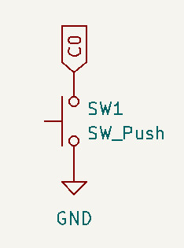
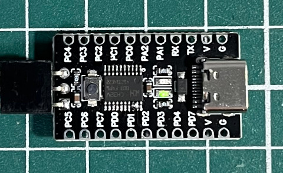
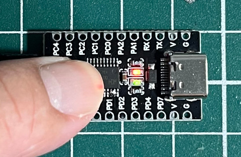

參考資訊：
https://github.com/ch32-rs/wlink
file:///home/steward/Downloads/CH32V003RM.PDF
https://github.com/AdiHamulic/CH32V003-Bare-Metal
https://github.com/ch32-rs/wlink/blob/main/docs/references.md
https://github.com/xpack-dev-tools/riscv-none-elf-gcc-xpack/releases/tag/v14.2.0-3
按鍵是連接到C0



.global _start
.equ RCC_APB2PCENR, 0x40021018
.equ R32_GPIOD_CFGLR, 0x40011400
.equ R32_GPIOC_CFGLR, 0x40011000
.equ R32_GPIOD_OUTDR, 0x4001140c
.equ R32_GPIOC_OUTDR, 0x4001100c
.equ R32_GPIOC_INDR, 0x40011008
.align 2
.option norvc
.text
j _start
.org 0x0300
_start:
li t0, (1 << 5) | (1 << 4)
li a0, RCC_APB2PCENR
sw t0, 0(a0)
li t0, (1 << 3)
li a0, R32_GPIOC_CFGLR
sw t0, 0(a0)
li t0, (1 << 0)
li a0, R32_GPIOC_OUTDR
sw t0, 0(a0)
li t0, (1 << 8)
li a0, R32_GPIOD_CFGLR
sw t0, 0(a0)
li a0, R32_GPIOD_OUTDR
li a1, R32_GPIOC_INDR
li a2, (1 << 2)
0:
lw t0, 0(a1)
sll t0, t0, 2
xor t0, t0, a2
sw t0, 0(a0)
j 0b
.end
完成

